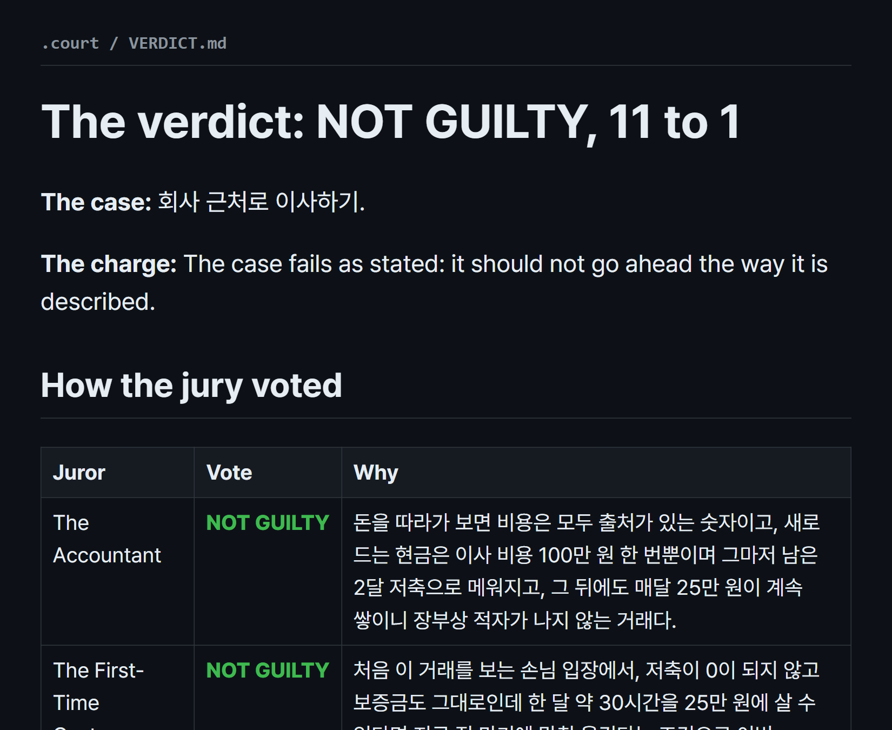
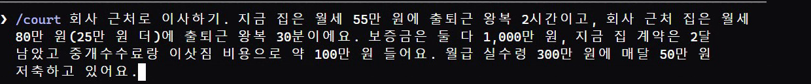
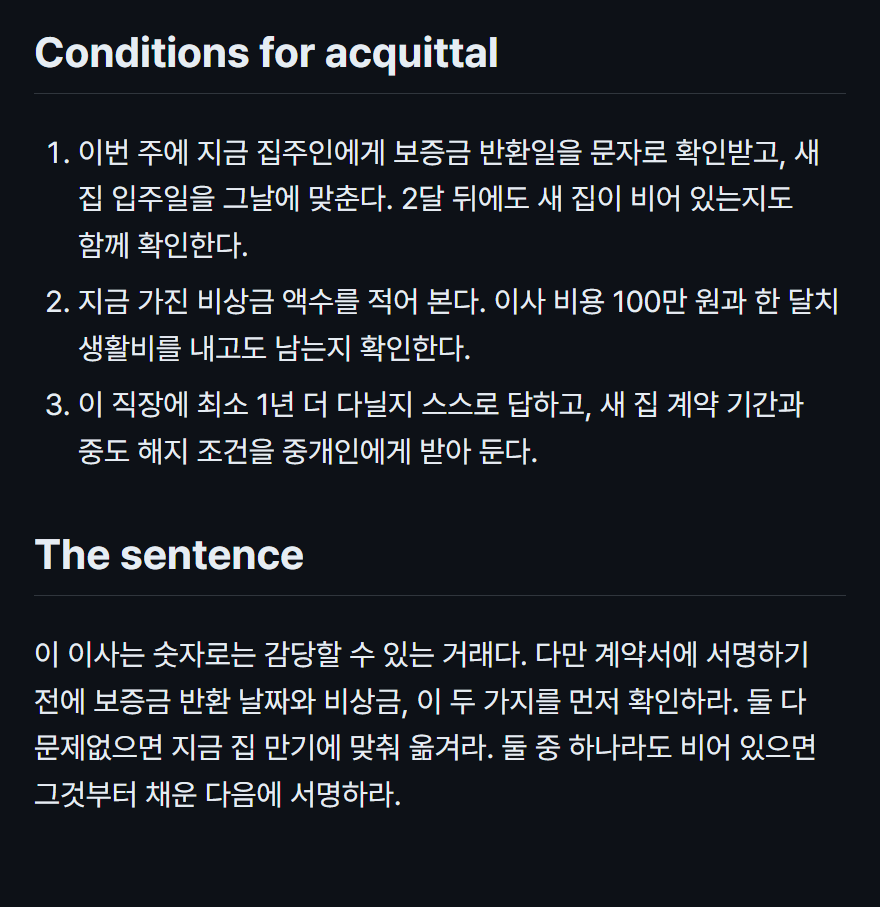
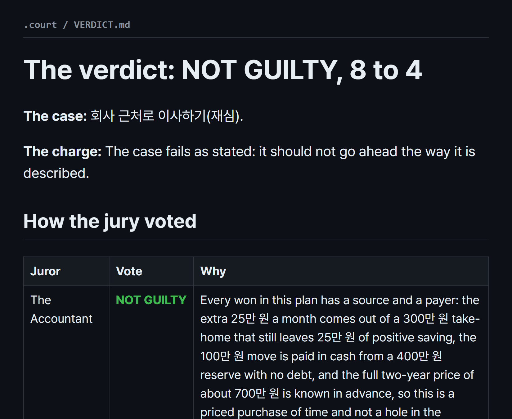

무료 오픈소스 court는 Claude Code에 붙이는 스킬이에요. 결정 하나를 넣으면 검사 클로드(왜 안 되나)와 변호인 클로드(왜 되나)가 변론하고 서로 반박한 뒤, 보는 눈이 다른 배심원 클로드 12명이 서로 표를 못 본 채 따로 투표해요. 판사 클로드는 판결과 함께 '무엇을 바꾸면 표가 뒤집히는지' 이번 주에 할 조건 3개로 정리해 줘요.

가장 쉬운 방법은 Claude Code에 아래 '설치 부탁' 두 줄을 그대로 붙여 넣는 거예요. 클로드가 스킬을 설치하고 /court가 되는지 확인해 줘요. 직접 넣으려면 '직접 설치'나 '플러그인 설치'를 쓰세요(플러그인으로 넣으면 이름이 /court-skill:court 예요).
배심원들이 .court 폴더에 파일을 하나씩 써요. 그때마다 승인을 묻지 않게 Claude Code에서 Shift+Tab을 눌러 'accept edits on'으로 바꿔 두세요. 내 다른 파일은 건드리지 않고 .court 폴더 안에만 써요.
배심원은 내가 쓴 내용만 알아요. '이사 갈까?'보다 월세·보증금·기간·저축처럼 돈과 시간을 숫자로 넣어야 판결이 구체적으로 나와요. 아래 상황별 문장에서 괄호만 바꿔 쓰세요.

결과는 .court 폴더의 VERDICT.md에 남아요. 유죄는 '이대로는 하지 마라', 무죄는 '해도 된다'는 뜻이에요. 배심원 12명의 표와 한 줄 이유, 많이 나온 반대 이유, 변호인이 옳았던 점, 그리고 '무죄 조건(Conditions for acquittal)' — 무엇을 바꾸면 표가 뒤집히는지가 나와요.

조건을 확인했으면 확인한 내용을 덧붙여 다시 재판을 여세요(아래 '재심'). 저희가 해 보니 고친 곳은 넘어가고, 처음엔 안 보이던 구멍(같은 날 보증금을 주고받는 빠듯한 일정)을 새로 짚었어요 — 표는 11:1에서 8:4로 오히려 갈렸어요.

Claude Code에 그대로
https://github.com/alexyc9381/court-skill Install this skill, then confirm /court works.
명령 프롬프트에 (윈도우)
git clone https://github.com/alexyc9381/court-skill xcopy /E /I court-skill\skills\court %USERPROFILE%\.claude\skills\court
Claude Code 안에서
/plugin marketplace add alexyc9381/court-skill /plugin install court-skill@court-skill
괄호만 바꾸기
/court 회사 근처로 이사하기. 지금 집은 월세 (55만 원)에 출퇴근 왕복 (2시간)이고, 새 집은 월세 (80만 원)에 왕복 (30분)이에요. 보증금은 (둘 다 1,000만 원), 지금 집 계약은 (2달) 남았고 이사 비용은 약 (100만 원)이에요. 월 실수령 (300만 원), 매달 (50만 원) 저축해요.
/court (노트북)을 (220만 원)에 사기. (12개월 할부)로 낼 거고, 쓰는 곳은 (영상 편집 부업)이에요. 지금 쓰는 건 (5년 된 노트북)이고, 다른 선택지는 (중고 120만 원)이에요. 월 실수령 (280만 원), 비상금 (300만 원)이에요.
/court (회사)를 그만두고 (하고 싶은 일)을 전업으로 하기. 모아 둔 돈 (1,000만 원), 지금까지 그 일로 번 돈 (월 30만 원), 한 달 고정비 (150만 원)이에요. 다시 취업하려면 (6개월) 정도 걸릴 것 같아요.
/court (지금 회사)에서 (새 회사)로 옮기기. 연봉은 (3,800만 원 → 4,300만 원), 출퇴근은 (40분 → 1시간 20분), 지금 회사는 (3년) 다녔고 새 회사는 (직원 30명 스타트업)이에요.
/court (퇴근 뒤 6개월) 동안 (자격증 이름) 준비하기. 학원비 (150만 원), 하루 (2시간), 따면 (수당 월 10만 원 / 이직에 유리)할 것 같아요. 지금 쓸 수 있는 시간은 (평일 저녁·주말 오전)이에요.
판결의 조건을 확인한 뒤
/court (처음 넣은 결정 문장 그대로). 판결 뒤에 확인한 것: (조건 1을 어떻게 했는지), (조건 2 결과), (조건 3 결과).
사용량 아낄 때
/court --quick (결정 문장)
도움이 되셨다면
@ai.antenna.kr
에서 바로 쓰는 AI 활용법을 계속 올립니다.